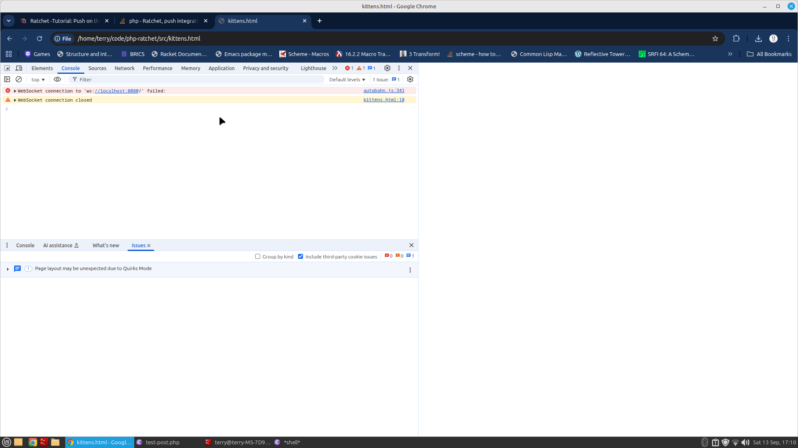
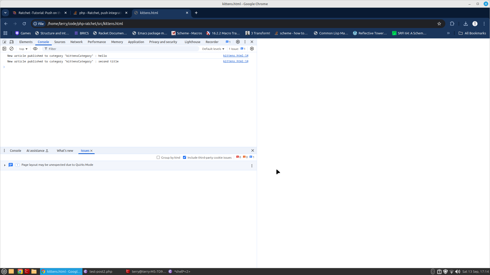
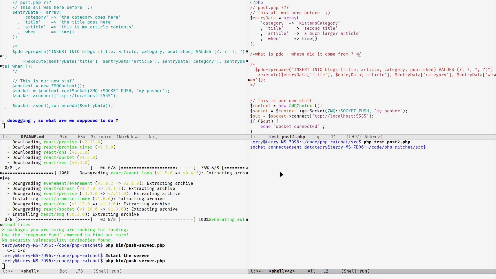

This site is hosted on github pages on terryc321/php-ratchet



This video above is an example of terminal websockets.
Initial php installation. Php package manager Composer installed at /usr/local/bin/composer.
This video above is an example of web browser websockets
This video above is an example of push integration . incorporating ratchet and zeromq .
This video above is an example of push integration